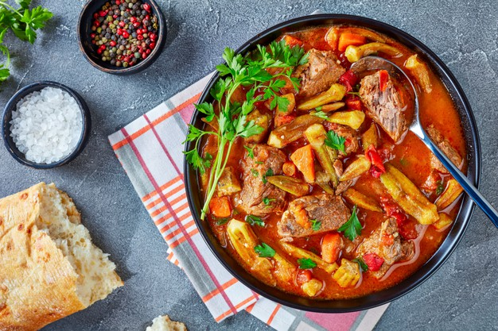

Etli bamya
Malzemeler
- Yarım kilo ayıklanmış bamya
- 250 gr dana veya kuzu kuşbaşı et
- İki orta boy kuru soğan
- Üç - dört adet olgun orta boy domates
- Bir yemek kaşığı salça
- İki yemek kaşığı zeytinyağı
- Bir limon suyu
- Tuz, karabiber, pulbiber
Nasıl yapılır?
- İlk olarak bamyalar temizlenir.
- Etler iyice yıkanır, suları süzdürülür ve ocağa konulur. Etler suyunu salıp çektikten sonra pişmeleri için bir miktar daha su konulur. Ağzı kapalı olarak kısık ateşte etler yumuşayıncaya kadar pişirilir.
- Ayrı bir tencerede yemeklik doğranan soğanlar sıvı yağda pembeleşince kabukları soyularak rendelenen domatesler eklenir. Domatesler pişince salça konulur ve bir - iki defa karıştırılır. Pişen etlerde buraya aktarılır.
- Ayıklanan bamyalar iyice yıkanarak etlerin üzerine bırakılır. İki çay bardağı su konularak yemeğin buğulanması sağlanır.
- Bamyalar sararıp konulan suyu çekince tuz, baharatlar ve limon suyu eklenir. Bamyaların üzerini geçmeyecek şekilde kaynamış su ilave edilir. Ezilmemeleri için çok fazla karıştırılmaz. Bamya çabuk ezilen bir sebzedir. Etler yumuşamadan, bamyalar pişmeden suyu azalırsa bir su bardağı kaynamış su eklenebilir.
- Kısık ateşte bamyalar yumuşayıncaya kadar tencerenin kapağı yarı olarak pişirilir.
İŞTE PÜF NOKTALAR!!!
- Bamyaların baş kısımları ayıklanırken bıçağı çok fazla derine daldırılmamalıdır. Çünkü bu kısımda bamyanın yapışkan özsuyu vardır. Bunların dışarıya çıkması yemeğin tellenmesine, salyalanmasına neden olabilir. Bamyalar bu şekilde temizlenir.
- Bamyalar hemen kararabilir. Beklemesi gerekiyorsa üzerine limon suyu dökülmelidir. Suda bekleyecekse suya hemen limon sıkılmalıdır.
AFİYET OLSUN